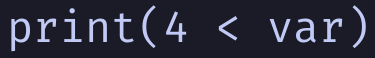
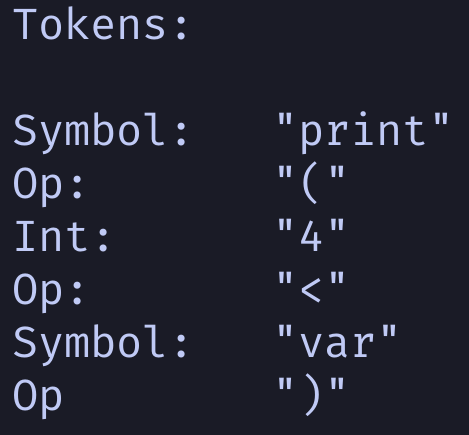
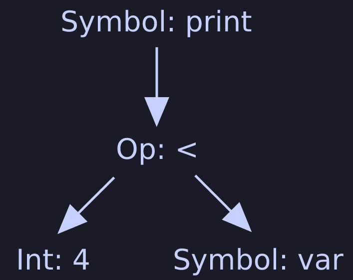
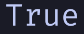

A first step into the world of programming languages.
Over the past month(ish), I’ve been working on a project I’ve always
dreamed of undertaking: creating my own programming language.
If you’re interested in seeing the code for yourself, check it out
here!
Where to start
Knowing where to start is often the most intimidating part of creating a
language, so I’ll go through some of the initial decisions and steps
taken towards beginning such a project.
Why are you making a language?
This it the first essential question to ask! Are you making a language
for fun? To learn? Is your language meant to fulfill an untouched niche?
Whatever the reason, its vital to consider what is important to your
language.
I’m making a language to learn, and play with experimental language
features like time complexity prediction, post-processed function
impurity, or strongly typed function side-effects. As we go, I’ll
explain how this plan impacts the decisions I make at each stage of the
process.
Compiled, or interpreted?
There are two main ways to turn code into action, compiling and
interpreting:
-
A compiler runs through the program code, figures out what it is doing, and then converts that code into "machine code". This file of machine code can then be executed very quickly by a computer whenever it needs to run the program.
-
An interpreter on the other hand will step through code line by line, figuring out what the code is doing as it goes.
Here’s a good analogy about compilers and interpreters I've read:
A compiler will read a recipe in a cookbook, and translate it into
explicit instructions for your kitchen: "Turn the stove to 180°C, then
turn left 45° and open the drawer"...
An interpreter on the other hand will read you each line of the
recipe one by one, and wait for you to tell it to move onto the next
line. This makes it a lot less bossy, but also leaves you a lot of
room to make mistakes if you’re not careful!
Generally, interpreting tends to be more flexible, while compiling tends
to have higher performance. But this is only scratching the surface of a
very complex topic.
Since I’m creating this language for the purpose of learning and
experimentation, I’m not too concerned with performance, so I’ll stick
with an interpreter for now.
Choosing a language, for your language
Every application, even compilers and interpreters are built with some
programming language, and the one you choose will play a huge role in
the development of your language.
If you’re creating a compiled language, the most important thing to
consider is how comfortable you are with the language you choose! At the
end of day, a few more seconds of waiting to compile millions of lines
of code isn’t a big price to pay.
However, the story is very different with interpreters. Because an
interpreter will directly run your code instead of creating an optimised
file of machine code, the interpreter being slow means your language is
slow.
I'd recommend using C, C++, or any other performant language for an
interpreter. Alternatively, functional languages are often very well
suited for parsing, and are convenient to build with, however their
immutability makes them incredibly inefficient interpreting
non-functional languages.
As I’ve mentioned before, I’m not worried about the speed of my
language, but am more focussed on creating a language which is easy to
experiment with. So the functional language Haskell suits my needs well.
Design overview
A programming language goes through several different stages before we
see our final result. Each stage will add an extra layer of meaning to
the data, starting by identifying key operations, and then building an
order operations, but we will get more into these ideas as we go...
This is an illustration of the processes we will cover, right up to
interpreting:



